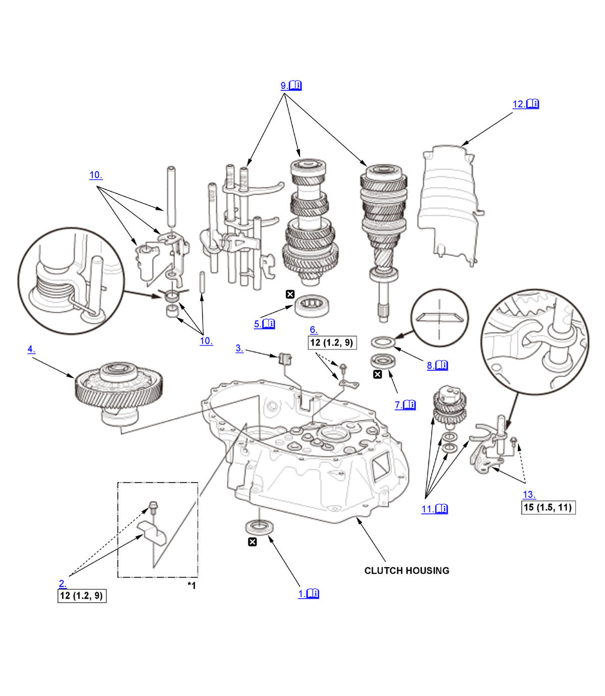
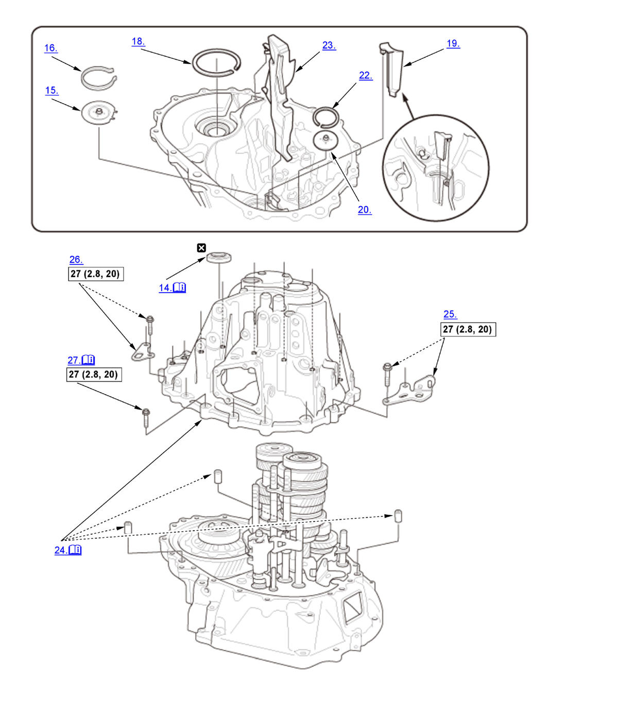
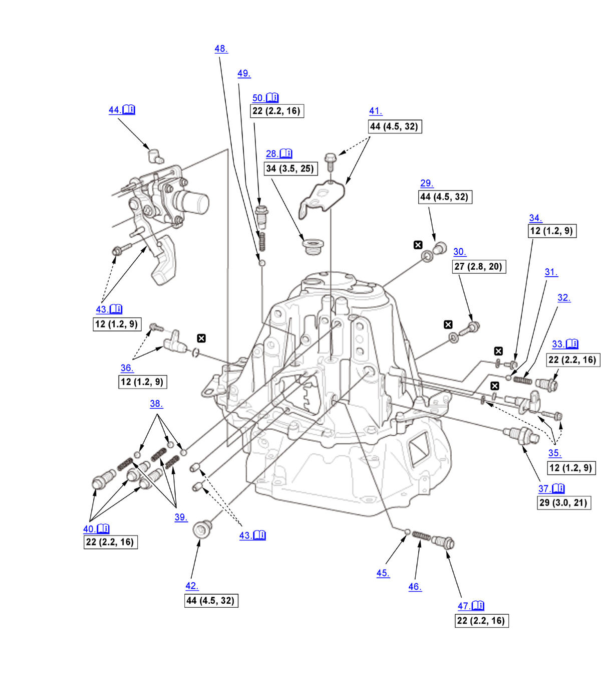

Manual Transmission Disassembly and Reassembly (Except K20C1 (M/T)): Reassembly: Procedure
Numbered call-outs in figure pertain to list numbers in following procedure.

Courtesy of HONDA, U.S.A., INC. |
Detailed information, notes, and precautions |
 |
Torque: N.m (kgf.m, lbf.ft) |
 |
Replace |
| *1 | 1.5L Engine |
Numbered call-outs in figure pertain to list numbers in following procedure.

Courtesy of HONDA, U.S.A., INC. |
Detailed information, notes, and precautions |
|
Torque: N.m (kgf.m, lbf.ft) |
|
Replace |
Numbered call-outs in figure pertain to list numbers in following procedure.

Courtesy of HONDA, U.S.A., INC. |
Detailed information, notes, and precautions |
|
Torque: N.m (kgf.m, lbf.ft) |
|
Replace |
- Oil Seal - Install
1. Install the oil seal flush with the clutch housing using the 65 mm oil seal driver. - Oil Gutter Plate C - Install (1.5L Engine)
- Magnet - Install
- Differential Assembly - Install
- Countershaft Bearing - Install
1. Install the bearing using the 15 x 135L driver handle and the 62 x 68 mm bearing driver attachment. - Bearing Set Plate - Install
- Mainshaft Oil Seal - Install
1. Install the oil seal flush with the clutch housing using the 15 x 135L driver handle and the 42 x 47 mm bearing driver attachment. Oil Seal Installed Height: 1.0-1.4 mm (0.039-0.055 in) - 64 mm Spring Washer - Install
NOTE: Be sure to install the spring washer in the direction shown.
- Mainshaft, Countershaft, and Shift Fork Assembly - Install
1. Apply a thin layer of tape to the mainshaft splines (A) to protect the oil seal. NOTE: Do not apply too much tape as it will damage the oil seal.
2. Install the mainshaft (B) and the countershaft (C) with the shift fork assembly (D) as an assembly.
- Shift Piece Assembly (Shift Piece Shaft, Shift Piece, Interlock, Select Return Spring, Shift piece Collar, 8 x 50 mm Pin) - Install
- Reverse Idler Gear Shaft Assembly - Install
1. Assemble the reverse idler gear shaft assembly (A), the reverse shift fork (B), the 33 mm spring washer (C) and the 20 mm thrust washer (D).
NOTE: Be sure to install the spring washer in the direction shown.2. Slide the reverse idler gear shaft assembly (A) on the rib (B) of the clutch housing, then install it into the hole (C) of the clutch housing. 3. Align the mark (A) on the clutch housing with the reverse gear holder hole (B). - Baffle Plate - Install
1. Set the baffle plate (A) into the reverse gear holder hole (B). - Reverse Shift Holder - Install
- Oil Seal - Install
1. Install the oil seal flush with the transmission housing using the 65 mm oil seal driver. - Oil Guide Plate C - Install
- 72 mm Snap Ring - Install
- Proper Size 90 mm Shim - Select
- 90 mm Shim - Install
- Oil Gutter Plate B - Install
- Oil Guide Plate M - Install
- Proper Size 72 mm Shim - Select
- 72 mm Shim - Install
- Oil Gutter Plate A - Install
- Transmission Housing - Install
NOTE: Do the following procedure whenever installing the parts. 1. Apply liquid gasket (P/N 08718-0003, 08718-0004, or 08718-0009) evenly to the clutch housing mating surface of the transmission housing. Install the component within 5 minutes of applying the liquid gasket.
NOTE: If too much time has passed after applying the liquid gasket, remove the old liquid gasket and residue, then reapply new liquid gasket.
2. Install the 14 x 20 mm dowel pins (A). 3. Place the transmission housing on the clutch housing, making sure to line up the shafts.
4. While expanding the 72 mm snap ring (B) on the countershaft ball bearing using the snap ring pliers, push the transmission housing down to start the countershaft ball bearing through the snap ring. Release the snap ring pliers, and push down the housing until it bottoms out and the snap ring snaps in place in the snap ring groove of the countershaft ball bearing.
5. Make sure the 72 mm snap ring (A) is securely seated in the groove of the countershaft bearing. Dimension (1) as installed:
3.3-6.0 mm (0.130-0.236 in) 6. Make sure oil guide plate C is positioned on the transmission housing as shown. - Clutch Line Bracket - Loosely Install
- Transmission Hanger B - Loosely Install
- Transmission Housing Bolt - Tighten
1. Install the 8 mm flange bolts finger-tight. 2. Tighten the 8 mm flange bolts in a crisscross pattern in several steps.
- 32 mm Sealing Cap - Install
NOTE: Do the following procedure whenever installing the parts. 1. Apply liquid gasket (P/N 08718-0003, 08718-0004, or 08718-0009) evenly to the threads of the 32 mm sealing cap. Install the component within 5 minutes of applying the liquid gasket.
NOTE: If too much time has passed after applying the liquid gasket, remove the old liquid gasket and residue, then reapply new liquid gasket.
- Drain Plug - Install
- 8 mm Flange Bolt - Install
- 7.94 mm Steel Ball - Install
- 26.0 mm Detent Ball Spring - Install
- Detent Bolt - Install
NOTE: Do the following procedure whenever installing the parts. 1. Apply liquid gasket (P/N 08718-0003, 08718-0004, or 08718-0009) to the thread of the detent bolt. Install the component within 5 minutes of applying the liquid gasket.
NOTE: If too much time has passed after applying the liquid gasket, remove the old liquid gasket and residue, then reapply new liquid gasket.
- Oil Check Bolt - Install
- Output Shaft (Countershaft) Speed Sensor - Install
- Neutral Position Sensor - Install
- Back-Up Light Switch - Install
NOTE: Do the following procedure whenever installing the parts. 1. Apply liquid gasket (P/N 08718-0003, 08718-0004, or 08718-0009) to the thread of the detent bolt. Install the component within 5 minutes of applying the liquid gasket.
NOTE: If too much time has passed after applying the liquid gasket, remove the old liquid gasket and residue, then reapply new liquid gasket.
- 7.94 mm Steel Ball - Install
- 26.0 mm Detent Ball Spring - Install
- Detent Bolt - Install
NOTE: Do the following procedure whenever installing the parts. 1. Apply liquid gasket (P/N 08718-0003, 08718-0004, or 08718-0009) to the thread of the detent bolt. Install the component within 5 minutes of applying the liquid gasket.
NOTE: If too much time has passed after applying the liquid gasket, remove the old liquid gasket and residue, then reapply new liquid gasket.
- Transmission Hanger C - Install
- Filler Plug - Loosely Install
- Change Lever Assembly - Install
NOTE: Do the following procedure whenever installing the parts. 1. Apply liquid gasket (P/N 08718-0003, 08718-0004, or 08718-0009) evenly to the transmission housing mating surface of the change lever assembly. Install the component within 5 minutes of applying the liquid gasket.
NOTE: If too much time has passed after applying the liquid gasket, remove the old liquid gasket and residue, then reapply new liquid gasket.
2. Install the 8 x 10 mm dowel pins and the change lever assembly.
- Breather Cap - Install
NOTE: Turn the breather cap mark toward the front side of the vehicle.
- 7.94 mm Steel Ball - Install
- 26.0 mm Detent Ball Spring - Install
- Detent Bolt - Install
NOTE: Do the following procedure whenever installing the parts. 1. Apply liquid gasket (P/N 08718-0003, 08718-0004, or 08718-0009) to the thread of the detent bolt. Install the component within 5 minutes of applying the liquid gasket.
NOTE: If too much time has passed after applying the liquid gasket, remove the old liquid gasket and residue, then reapply new liquid gasket.
- 7.94 mm Steel Ball - Install
- 23.4 mm Detent Ball Spring - Install
- Detent Bolt - Install
NOTE: Do the following procedure whenever installing the parts. 1. Apply liquid gasket (P/N 08718-0003, 08718-0004, or 08718-0009) to the thread of the detent bolt. Install the component within 5 minutes of applying the liquid gasket.
NOTE: If too much time has passed after applying the liquid gasket, remove the old liquid gasket and residue, then reapply new liquid gasket.
- Transmission Gear - Check
1. Check that the transmission shifts into all gears smoothly.